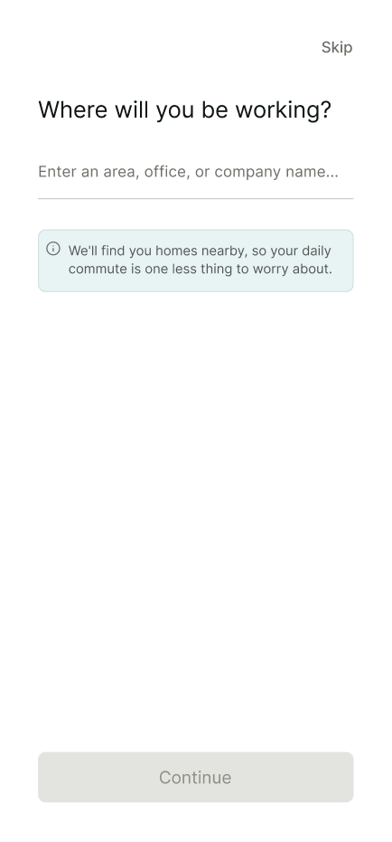
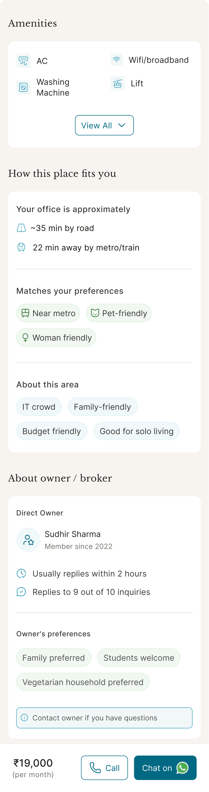
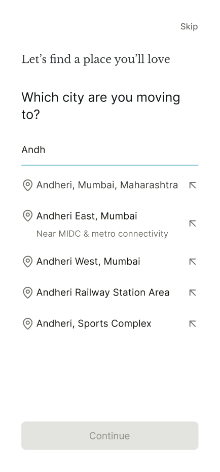
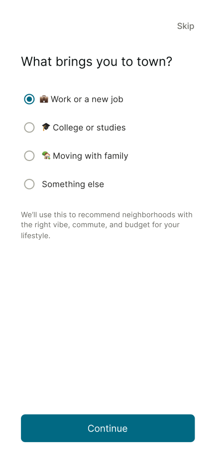
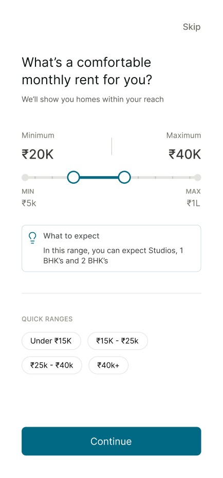
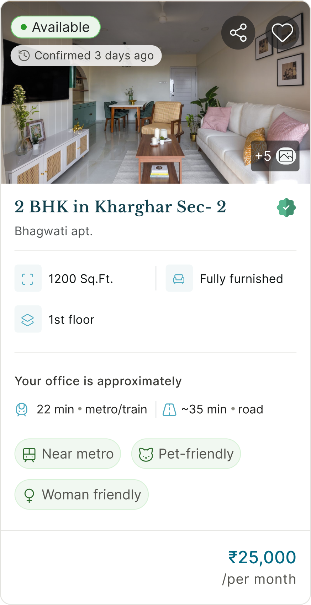
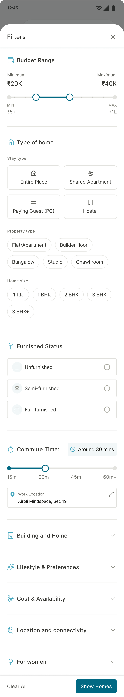
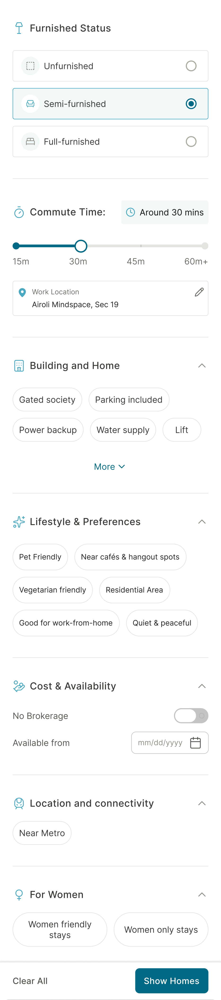

About 4 min read
Nestwise
From 500 listings to 5 right homes: designing rental discovery around personalization and trust.
- Role
- Product Designer, End-to-End
- Project
- Personal Project
- Industry
- Rental-Home Discovery
- Scope
- Secondary Research · Product Strategy · UX/UI Design
Where it started
Finding a home in a new city is one of the most stressful decisions young Indians make. Friends described the same experience again and again: hundreds of listings, most outdated or misleading, and no sense of what a neighbourhood actually feels like. I’d been through it myself.
Nestwise started as a question: what would a rental platform look like if it were built around the user’s confidence?
The real problem
This isn’t a search problem. It’s a decision-anxiety problem.
People weren’t struggling to find listings. They were struggling to trust what they found, picture where they’d actually live, and choose under deadline pressure. The existing platforms compete on listing volume, which is the opposite of what renters need.
What research revealed
I read through Reddit threads, Quora answers, and the Facebook and WhatsApp groups where renters swap advice, and used the existing platforms myself to map what each did well and where it failed. I also had a few informal conversations with people who were mid-search. That’s too small a sample to prove anything, but enough to check whether the patterns I was reading about matched real experience.
Three mental models kept showing up that no platform was designing for:
The decisions
I started from one question: what would it take for someone to feel confident enough to shortlist a home they haven’t visited?
Help people decide, not just search
Most platforms are search engines. The real need is decision support. That changed the onboarding, the hierarchy of the listing card, and what gets surfaced first. Instead of “what are you looking for?”, onboarding asks “where do you need to be?” and builds outward from there.

Design trust in, don’t bolt it on
Airbnb builds trust through review volume, LinkedIn through verified identity. I borrowed from both: identity-anchored landlord profiles, freshness indicators showing when a listing was last confirmed, and photo verification signals. My own constraint: none of it could feel like a compliance form. Bureaucratic trust would break the calm the whole product depends on.

Cut what adds complexity without adding confidence
Early explorations included reviews, and tenant forums. I cut them. They were valuable, but each added a decision variable for someone already under pressure. The test for every feature: does it help a user move from “maybe” to “I want to see this place”?
The design
The four rules I kept coming back to
Whenever I got stuck on a design call, one of these settled it.
Warm neutrals over clinical whites
Cream, soft earth tones, muted greens, with large, generously spaced type. Reassuring, not promotional.
- Cream #F7F4F0
- Sand #E9D29F
- Earth #7C4720
- Green #4CA480
- Teal #016983
- Ink #043C48
Onboarding that narrows before it shows
Work location, commute time, lifestyle choices (solo woman, family, student). By the first listing, the irrelevant 90% is already gone.

City

Reason
Work

Budget
Lifestyle
Cards that answer four questions
Is it available? In budget? In the right area? Does it fit me? Only what’s needed to make someone curious enough to open it.

- Is it available?
- In budget?
- In the right area?
- Does it fit me?
Detail pages built for confidence
Specs, pricing and deposits, amenities, commute and neighbourhood context, lifestyle fit, and owner expectations, grouped in a clear hierarchy so people can evaluate a home without contacting anyone for basics. They show what it will be like to live there, not just what’s available.
The home, pricing and terms
Amenities, fit, the area and the owner
Two-tier filters
Tier 1 covers what’s needed to judge a home quickly: stay type, property type, home size, budget, furnishing, commute time. Tier 2 holds detailed preferences: amenities, neighbourhood, availability date, near metro. Revealed progressively, so the screen never overwhelms.

Tier 2 folded away

Tier 2 open
How I’d know it works
Success isn’t contact rate. It’s whether people trust the platform enough to come back.
-
2 saves + 7-day return
The north star. Saving two or more homes means real options were found; returning within a week means they chose us for the search.
-
Area profile engagement
The share of users who view a neighbourhood profile before contacting. High means the context layer is working.
-
Contact quality rate
The share of contacts where the renter says the listing was available and accurate. The system-level trust metric.
What I took away
The most important decision on this project was reframing the problem.
Rental platforms have a trust deficit because their business model is misaligned with what renters need. Designing around that, rather than around the same browse-and-scroll pattern everyone uses, is what made the direction distinct.
The hardest constraint was making trust feel like a feature, not a form: verification without friction.
That tension shaped almost every visual and structural choice.